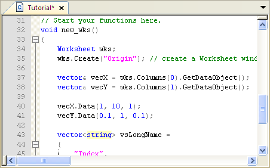
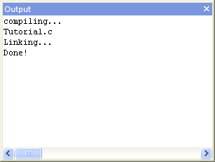
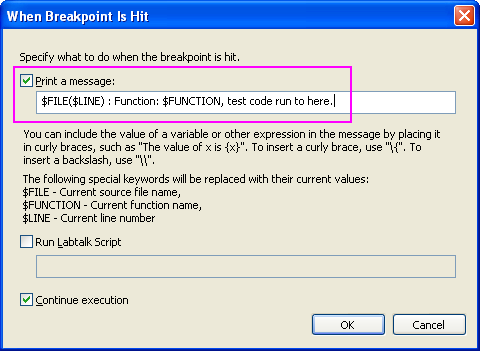
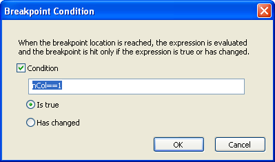
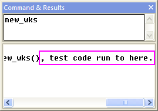
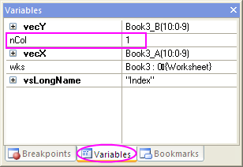
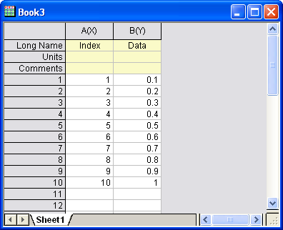

Einführung in Origin C und Code Builder
OC-CodeBuilder
Zusammenfassung
Origin
C unterstützt eine nahezu vollständige ANSI C-Sprachsyntax sowie einen
Teil der C++-Funktionen, einschließlich interne und mittels DLL erweiterte
Klassen. Außerdem ist Origin C "Origin-kompatibel". Das heißt,
das Origin-Objekte wie z.B. Arbeitsblätter und Diagramme nach Klassen
in Origin C angeordnet werden, wodurch eine direkte Bearbeitung dieser
Objekte und ihrer Eigenschaften aus Origin C möglich wird.
Die Integrierte Entwicklungsumgebung (IEU) von Origin C wird als Code
Builder bezeichnet. Der Code Builder stellt Hilfsmittel zum Schreiben,
Kompilieren und Debuggen Ihrer C-Funktionen bereit. Sobald eine Origin
C-Funktion kompiliert und verknüpft ist, kann die Funktion auf unterschiedliche
Weise über die Arbeitsbereiche von Origin oder dem Code Builder aufgerufen
werden.
Um den Code Builder zu öffnen, klicken Sie auf die Schaltfläche  auf der Symbolleiste Standard oder drücken
Sie Alt + 4 auf der Tastatur.
auf der Symbolleiste Standard oder drücken
Sie Alt + 4 auf der Tastatur.
Origin-Version mind. erforderlich: 9.0 SR0
Was Sie lernen
werden
Dieses Tutorial zeigt Ihnen, wie Sie:
- eine Origin C-Funktion erstellen.
- die Funktion debuggen und ausführen.
- Funktion mit der Schaltfläche Benutzerdefinierte Routine ausführen
Schritte
Origin
C-Funktion erstellen
- Öffnen Sie im Code Builder einen neuen Arbeitsbereich (Datei:
Neuer Arbeitsbereich). Klicken Sie auf der Symbolleiste Standard
des Code Builders auf die Schaltfläche Neu
 , um den Dialog Neue Datei aufzurufen.
, um den Dialog Neue Datei aufzurufen.
-
Wählen Sie C-Datei, um eine .c-Datei zu erstellen. Geben Sie
im Textfeld Dateiname den Text Tutorial ein: Legen Sie im
Textfeld Speicherort den Ordner Anwenderdateiordner/OriginC
zum Speichern der Quelldatei fest. Stellen Sie sicher, dass das Kontrollkästchen
Zum Arbeitsbereich hinzufügen aktiviert ist. Klicken Sie auf OK.
Eine Datei mit dem Namen Tutorial.c wird im Arbeitsbereich des Code Builders
erstellt und geöffnet.
- 
-
Kopieren und fügen Sie den folgenden Code unter der Zeile "//
start your functions here." ein:
void new_wks()
{
Worksheet wks;
wks.Create("Origin"); // create a Worksheet window with template - Origin
vector& vecX = wks.Columns(0).GetDataObject();
vector& vecY = wks.Columns(1).GetDataObject();
vecX.Data(1, 10, 1);
vecY.Data(0,1, 1, 0,1);
vector<string> vsLongName =
{
"Index",
"Data"
};
for (int nCol = 0; nCol < wks.GetNumCols(); ++nCol)
{
Column col (wks, nCol);
col.SetLongName(vsLongName[nCol]);
}
}
Diese Funktion new_wks erstellt ein Arbeitsblatt mit Hilfe der Origin-Vorlage.
Die erste Spalte wird mit Zahlen von 1 bis 10 mit einem Inkrement von
1 gefüllt. Die zweite Spalte wird mit Zahlen von 0,1 bis 1 mit einem Inkrement
von 0,1 gefüllt. Zuletzt werden die Langnamen der ersten und zweiten Spalte
als Index und Daten festgelegt.
- Klicken Sie auf die Schaltfläche Speichern
 .
.
 |
Mini-Tutorial: Suchen Sie weiter Verwendungsbeispiele
von GetDataObject und verwenden Sie ein Lesezeichen, um schnell
zu einer markierten Zeile zu navigieren.
- Klicken Sie auf Zeile 33 und klicken Sie auf die Schaltfläche Lesezeichen
umschalten .
- Markieren Sie GetDataObject() in der Zeile 37 und klicken
Sie auf die Schaltfläche In Dateien suchen
 . .
- Setzen Sie im Dialog Suchen in Dateien In Dateitypen
als *.c,*.cpp und In Ordner als <Programmordner>\OriginC.
Aktivieren Sie alle Kontrollkästchen in diesem Dialog und klicken Sie
auf die Schaltfläche Suchen.
- Klicken Sie in dem Fenster Ergebnisse suchen doppelt auf
eine der Zeilen, die GetDataObject() enthalten. Die Datei, die
diese Zeichenkette beinhaltet wird geöffnet, und springt zu dem entsprechenden
Abschnitt.
- Um zu der in Schritt 1 markierten Zeile zurückzukehren, aktivieren
Sie das Fenster Lesezeichen. Klicken Sie doppelauf das Lesezeichen,
das in Schritt 1 dieses Mini-Tutorials hinzugefügt wurde. Der Cursor springt
zu Zeile 33 in der Datei Tutorial.c.
|
Origin 9 bietet einige nützliche
Hilfsmittel:
-
Dateien schnell öffnen
- Drücken Sie Shift + Alt + O oder wählen Sie Hilfsmittel:
Dateien schnell öffnen, um den Dialog Dateien schnell öffnen
aufzurufen.
-
Zwischen .h- und .c/.cpp-Datei wechseln
- Wenn Sie eine .h-Datei öffnen, drücken Sie Strg + Alt + O,
um die entsprechende .c- oder .cpp-Datei zu öffnen und umgekehrt.
-
Symbole suchen
- Drücken Sie Shift + Alt + S oder wählen Sie Hilfsmittel:
Symbole suchen, um denDialog Symbole suchen zu öffnen.
|
Funktion
debuggen und ausführen
-
Klicken Sie auf der Symbolleiste Standard im Code Builder auf
die Schaltfläche Erstellen
 . Auf diese Weise wird die Funktion new_wks
kompiliert und die Verknüpfung durchgeführt (Bitte stellen Sie sicher,
dass die Datei Tutorial.c aktiv ist).
. Auf diese Weise wird die Funktion new_wks
kompiliert und die Verknüpfung durchgeführt (Bitte stellen Sie sicher,
dass die Datei Tutorial.c aktiv ist).
- 
- Klicken Sie auf die Leerstellen links der Zeilen 34, 35, 37, 50.
Ein rotes Ballsymbol wird am Anfang jeder Zeile platziert, das kennzeichnet,
dass Sie Haltepunkte zu diesen Zeilen hinzugefügt haben. Diese Haltepunkte
werden im Fenster Haltepunkte aufgeführt.
- Deaktivieren Sie im Fenster Haltepunkte das Kontrollkästchen
vor tutorial.c, line 35, um diesen Haltepunkt zu deaktivieren.
Beachten Sie, dass das Symbol des Haltepunkts vor Zeile 35 sich in einen
leeren Kreis verwandelt.
 |
Um einen Haltepunkt zu löschen, können Sie auf das Symbol des Haltepunkts
vor der entsprechenden Zeile klicken oder mit der rechten Maustaste auf
den Haltepunkt im Fenster Haltepunkte klicken und die Option Haltepunkt
löschen auswählen. |
-
Klicken Sie mit der rechten Maustaste auf den Haltepunkt in Zeile 37.
Wählen Sie Bei Treffer, um einen Dialog zu öffnen. Aktivieren Sie
das Kontrollkästchen vor Eine Meldung drucken. Fügen Sie in dem
Textfeld unter Eine Meldung drucken: den Text test code runs
to here ein. Klicken Sie zum Fertigstellen auf OK. Beachten
Sie, dass dieses Haltepunktsymbol jetzt eine Diamantform hat.
- 
-
Klicken Sie mit der rechten Maustaste auf den Haltepunkt in Zeile 50.
Wählen Sie Bedingung, um einen Dialog zu öffnen. Aktivieren Sie
Bedingung und geben Sie nCol==1 in das Textfeld ein. Klicken
Sie auf OK.
- 
- Um diesen Code auszuführen, geben Sie den Funktionsnamen new_wks
in das obere Bedienfeld des Fensters LabTalk-Konsole ein.
- Drücken Sie Enter. Ein gelber Pfeil wird bei dem ersten Haltepunktsymbol
angezeigt, der kennzeichnet, in welche Codezeile ausgeführt wird.
- Drücken Sie F8, um mit dem Debuggen des Codes fortzufahren. Sie
können sehen, wie der gelbe Pfeil in Zeile 50 verschoben wird.
-
Im Fenster Befehl & Ergebnisse wird die Meldung, die beim
Haltepunkt in Zeile 37 hinzugefügt wurde, in das untere Bedienfeld gedruckt.
- 
-
Aktivieren Sie das Fenster Variablen. Die Variablennamen werden
in der ersten Spalte aufgelistet und ihre Werte in der zweiten Spalte.
Überprüfen Sie den Wert von nCol.
- 
- Drücken Sie F5, um alle Code auszuführen. Der gelbe Pfeil wird
nicht mehr angezeigt.
-
Kehren Sie zum Origin-Arbeitsbereich zurück. Sie können sehen, dass
eine Arbeitsmappe wie im folgenden Bild erstellt wird.
Funktion mit der Schaltfläche Benutzerdefinierte Routine
ausführen
- Halten Sie die Tasten Strg + Shift gedrückt und klicken Sie auf
die Schaltfläche Benutzerdefinierte Routine
 . Die Datei Custom.ogs wird im Code Builder
geöffnet.
. Die Datei Custom.ogs wird im Code Builder
geöffnet.
- Klicken Sie, wenn sich der Cursor in Zeile 11 befindet, auf die
Schaltfläche Kommentar
 , um Zeile 11 auszukommentieren.
, um Zeile 11 auszukommentieren.
-
Geben Sie den folgenden Code bei Zeile 12 und 13 ein.
Run.LoadOC(%YOriginC\Tutorial.c); //%Y is user file folder
new_wks();
Dieser Code lädt die Datei Tutorial.c, die Sie im vorhergehenden
Abschnitt hinzugefügt haben, und führen Sie die Funktion new_wks()
aus.
- Klicken Sie auf die Schaltfläche Speichern .
-
Kehren Sie zum Origin-Arbeitsbereich zurück. Klicken Sie auf die Schaltfläche
Benutzerdefinierte Routine . Ein neues Arbeitsblatt wird erstellt
und mit Daten gefüllt, wie im letzten Abschnitt auch.
- 